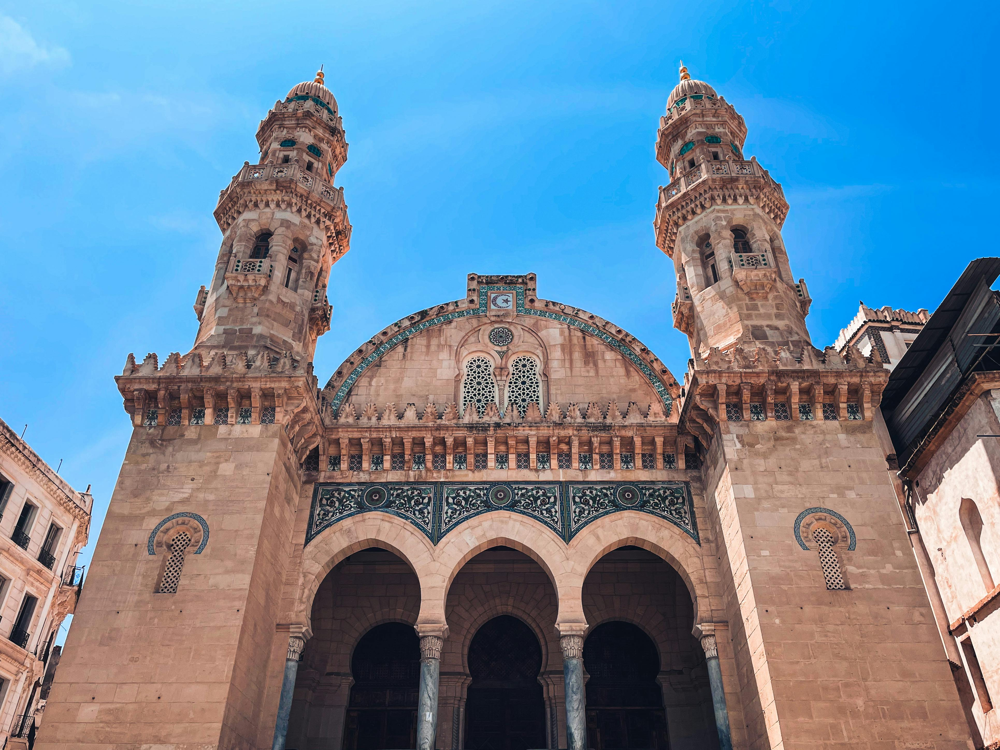
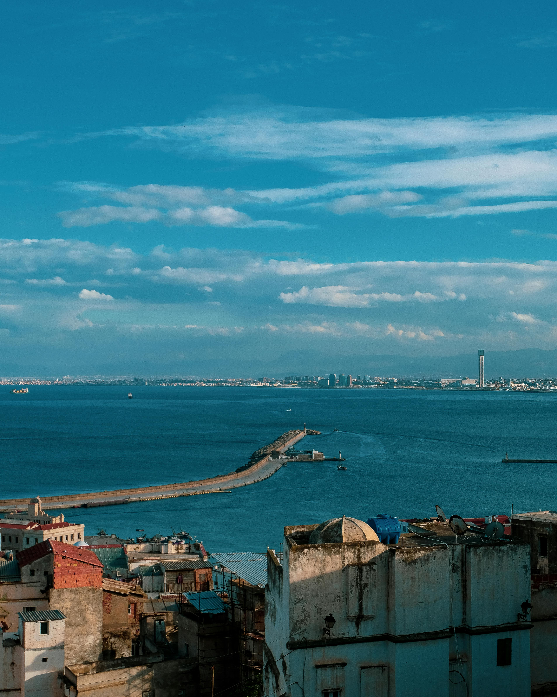
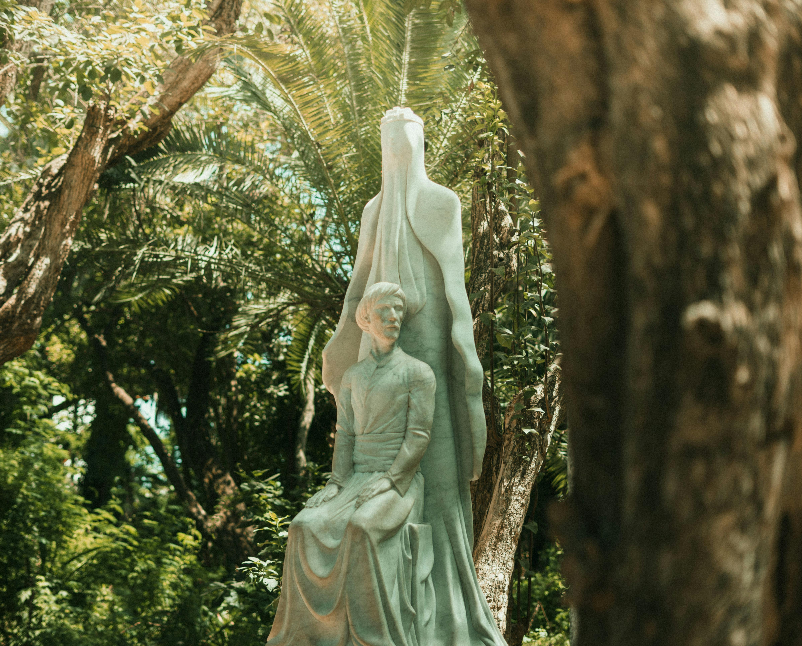
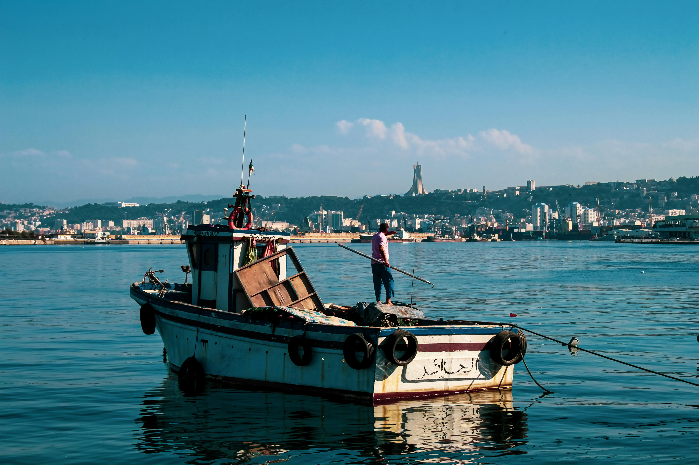
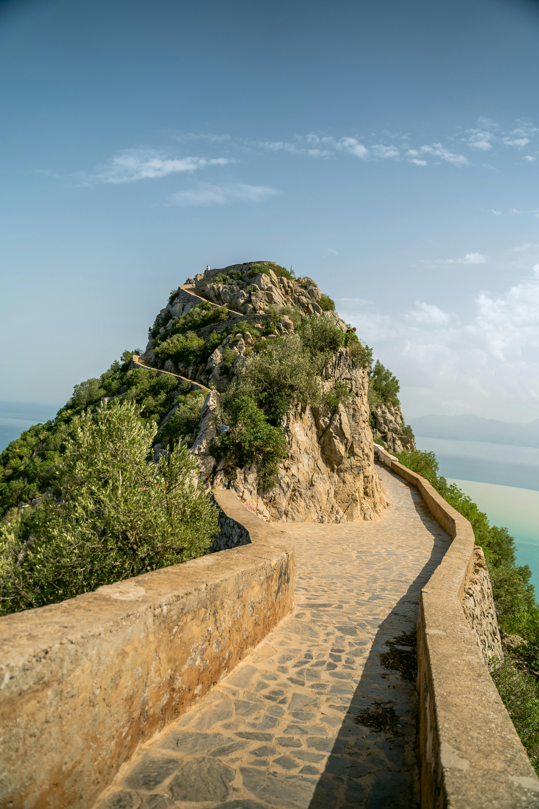

Algiers
Algiers, the capital city of Algeria, is a beautiful coastal gem where the Mediterranean breeze meets rich North African culture. Known as 'Alger la Blanche' (Algiers the White) for its stunning whitewashed buildings, the city offers a fascinating blend of French colonial architecture and Islamic heritage.
I began my exploration in the historic Casbah — a UNESCO World Heritage site with narrow alleys, vibrant street life, and ancient homes perched on a hillside. The views of the sea from the top were absolutely breathtaking.
From there, I visited the Martyrs' Memorial, an iconic monument honoring those who fought for Algeria’s independence. The structure itself is massive and symbolic, and the surrounding gardens make it a peaceful place to reflect.
One of my favorite experiences was wandering along the bustling streets of downtown Algiers, lined with cafés, bakeries, and markets. I tried *khobz el dar* (traditional Algerian bread) and *makroud*, a delicious date-filled pastry.
I also took time to visit the Notre-Dame d’Afrique basilica. Perched on a cliff overlooking the bay, its architecture is incredible, and inside it holds messages of peace and unity in many languages.
Algiers feels both timeless and dynamic. From ancient ruins to vibrant neighborhoods, it’s a city that invites you to slow down, explore, and listen to its stories. Whether you're watching the sunset over the harbor or chatting with locals in a teahouse, there’s a sense of warmth and welcome everywhere you go.
Before I left, I spent one last afternoon walking along the seafront promenade, soaking in the sun and savoring the salty breeze. Algiers may not always be in the spotlight, but it has a quiet magic that lingers long after you’ve gone.
